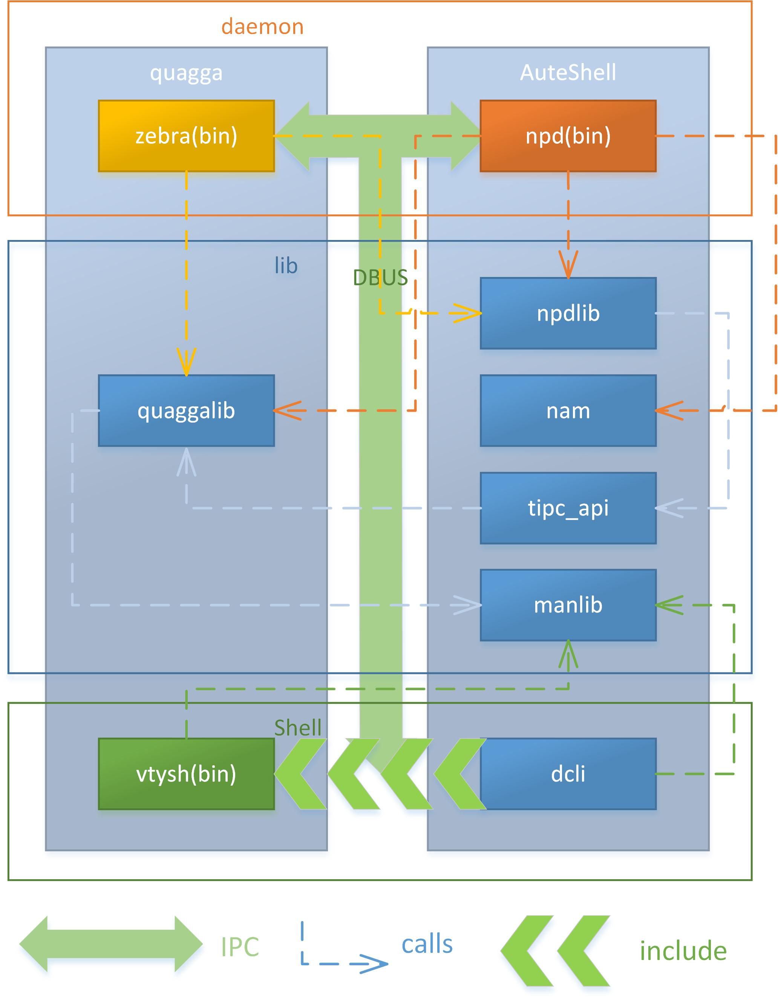

总体框架
对于本工程来说，可以有两种划分方法。一种是按照职能来划分，而另一种是按照模块所属的项目划分。按照职能来划分的话，可以分为守护进程、库和用户界面三个部分。而按照所属项目划分的话，可以分为quagga和CHANOS两个部分。
用户通过用户界面（命令行的形式）来输入命令，vtysh将命令进行解析后，通过DBUS与守护进程zebra或npd进行通讯。zebra和npd接到相应解析后的命令后分别进行相应操作，之后将结果再通过DBUS返回给vtysh。vtysh进行相应处理后，将结果打印到屏幕上。这样就完成了一次标准的用户操作。quagga是另外一个开源项目，主要负责的是网络三层等与硬件关系不大的网络管理功能，在这里不再讨论。而npd和dcli属于CHANOS部分，主要是二层、vlan、以太端口、板管理等和硬件关系较大的功能模块。
下图为各个模块之间的调用关系，以及进程间通信的情况。
